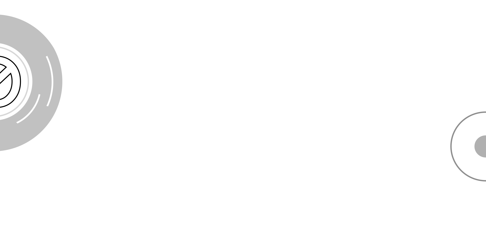

TIME WARP - одно из главных техно-событий Европы, ежегодно собирающее в немецком городе Мангейме самые громкие имена сцены.
мангейм
нью-йорк
сан-паулу
2021
2022
шрифт
моно
ши
ри
нн
ыи
12
34
Моноширинный шрифт от Адама Катия, вдохновленный
старой пишущей машинкой Continental
ТРИ альтернативных
набора
символов
Столько же, сколько популярных музыкантов появятся на сцене в 2022 году
БЕЛЬГИЙСКИЙ ДИДЖЕЙ
Владелец лейбла звукозаписи Lenske
Амели Ленс
Нина Кравиц и Хелена Хауфф


АБВГДЕЁЖЗИЙКЛМНОПРСТ УФХЦЧШЩЪЫЬЭЮЯ абвгдеёжзийклмнопрст уфхцчшщъыьэюя 1234567890(!?%*#$&)
Фестиваль